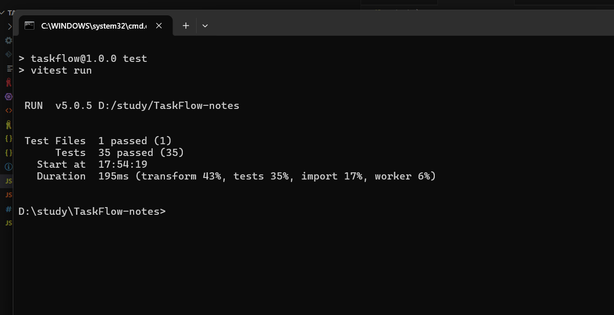

第七章：学会验证 AI 生成的代码#
本章约 90 分钟。改完代码 ≠ 改对代码。本章教你像工程师一样验证。
学习目标#
- 理解"能跑 ≠ 正确"、"新功能能跑 ≠ 老功能没坏"；
- 会设计三类测试输入：正常、边界、非法；
- 会用 DevTools Console 和网络面板定位问题；
- 会保留"可复现的问题步骤"；
- 知道本课程实际跑了哪些测试、结果是什么。
开始前需要#
- 修改版已完成第六章的功能；
- 会开 DevTools（F12）。
7.1 验证的第一性原理：拆三个层次#
| 层次 | 问题 | 例子 |
|---|---|---|
| 能跑吗 | 页面能打开、JS 没崩 | Console 无红字、交互有反应 |
| 功能对吗 | 新功能按需求工作 | 备注能存、能搜、能导 |
| 没改坏吗 | 老功能全部照常 | 添加/删除/筛选/拖拽依然正常 |
大多数人只验第一层。工程师三层全验——第三层叫回归测试，是"改一处、测一片"的纪律。
7.2 手动测试：一份真实可照抄的清单#
下面这套测试，本课程对修改版全部实际跑过，你可以原样复做。
A. 新功能（备注）#
| # | 操作 | 预期 |
|---|---|---|
| A1 | 点任务下 "Add note…" | 出现输入框，自动聚焦 |
| A2 | 输入"关联实验报告第3章"，按 Enter | 显示备注 + toast "Note saved." |
| A3 | 再点备注 | 变输入框且预填已有备注 |
| A4 | 改文字后按 Escape | 恢复原备注，不保存 |
| A5 | 清空备注按 Enter | 回到 "Add note…"，toast "Note removed." |
| A6 | 输备注时不按 Enter，直接点空白处 | 失焦自动保存（blur 兜底） |
| A7 | 输入 <script>alert(1)</script> |
显示为文字，不弹窗（转义生效） |
B. 老功能回归（必须全过）#
| # | 操作 | 预期 |
|---|---|---|
| B1 | 添加新任务 | 出现 + toast |
| B2 | 点圆圈 | 划线完成 |
| B3 | 双击任务文字 | 进入编辑（不是备注编辑） |
| B4 | 删除任务 | 消失 + toast + Undo 可用 |
| B5 | All/Active/Completed 筛选 | 正确过滤 |
| B6 | 搜索任务文字关键词 | 命中 + 高亮 |
| B7 | 拖拽排序 | 顺序可变且保存 |
| B8 | Clear completed | 只清已完成 |
C. 存储与持久化#
| # | 操作 | 预期 |
|---|---|---|
| C1 | 加任务+备注 → F5 | 都还在 |
| C2 | DevTools: localStorage.taskflow_tasks |
JSON 里有 "note":"..." |
| C3 | 清空 localStorage → 刷新 | 回到空状态，不报错 |
D. 导入导出与旧数据#
| # | 操作 | 预期 |
|---|---|---|
| D1 | 点 Export → 打开 JSON | 每条任务含 "note" 字段 |
| D2 | 修改 JSON 里 note → Import | 备注显示正确 |
| D3 | 导入不含 note 字段的旧版 JSON |
不报错，任务正常显示 |
| D4 | 导入恶意 JSON：{"text":"<img src=x onerror=alert(1)>"} |
显示为文字 |
E. 边界与异常输入#
| # | 输入 | 预期 |
|---|---|---|
| E1 | 空白任务（只打空格） | 不添加 |
| E2 | 超长备注（>200 字符） | 被截到 200（maxlength） |
| E3 | 只含空格的备注 | 按"空"处理，保存后显示 Add note… |
| E4 | 中文/emoji 备注 | 正常显示和存储 |
| E5 | 同名任务再加一条 | 重复警告 toast，不添加 |
以上 33 项手动测试 + 自动化测试，教程作者在制作时留有完整记录（本体验包未附该目录，不影响你的主线学习）。
7.3 自动化测试：两层都跑了#
本课程对修改版做了两层自动化验证（完整记录由教程作者存档，本包未附）：
① 单元测试（Vitest，35 个）：测 taskUtils.js 里的纯函数（建任务、筛选、转义、日期）。在修改版目录跑 npm install && npm test：

Test Files 1 passed | Tests 35 passed ——33 个老的 + 2 个新的全过。
② 浏览器端测（Playwright，75 项）：真浏览器里跑真实交互——同一套核心功能检查先在原版上跑 29 项，再在修改版上跑一遍 29 项回归，另加 file:// 教学验证 1 项和备注功能专项 16 项。结果：
=== 75 passed, 0 failed ===
原版和修改版跑的是同一套核心检查（各 29 项），不是各编一套——这样才能说"修改没有弄坏原有功能"。逐条结果由教程作者存档，本包未附。
你怎么跑：写这类脚本需要 Node + npm install playwright，是教学之外的可选验证，本包未附脚本。但手动测试清单（7.2）才是你的主线——先把上面的手动项逐项跑过。
7.4 DevTools 是你的显微镜#
验证时离不开的工具，按频率排序：
| 面板 | 干什么 | 本项目用法 |
|---|---|---|
| Console | 看报错、跑 JS | 看 localStorage.taskflow_tasks、看 CORS 红字 |
| Elements | 看 DOM 结构 | 检查备注 <div class="task-note"> 有没有被正确渲染 |
| Application → Local Storage | 看存储 | 直接看到 taskflow_tasks 的完整 JSON |
| Sources | 断点调试 | 在 saveNoteTask 里打断点看 newNote 的值 |
断点调试一招鲜：Sources → 找到 script.js → 在 saveNoteTask 函数体的行号上点一下（出现红点）→ 页面里触发保存 → 代码停在那行，右侧能看到所有变量的当前值。这比 console.log 还好用。
7.5 发现 bug 怎么记录（将来问 AI 用得上）#
一个"好 bug 报告" = 复现步骤 + 预期 + 实际 + 环境：
标题：备注输入框按 Escape 会顺手清空搜索框
复现：
1. 搜索框输入 "报告"；
2. 点某任务的 "Add note…" 进入备注编辑；
3. 按 Escape。
预期：只取消备注编辑，搜索框保持 "报告"。
实际：备注编辑取消了，但搜索框也被清空了。
环境：Windows 11 + Edge，修改版 commit-xxx。
原因分析（可选）：init() 的全局 Escape 监听没排除备注编辑态。
带着这份报告问 AI，它一句话就能指出 6.4 改动 8 的那个 !editingNoteTaskId 条件——信息越具体，AI 修得越准。
7.6 AI 能帮你设计测试，但你要看得懂预期#
让 AI 出测试点的正确姿势：
我刚给任务管理器加了"任务备注"功能（贴 saveNoteTask 代码）。
请帮我列 10 个需要手动测试的场景，分成：
正常用例 / 边界输入 / 异常输入 / 回归项。
每个场景给"操作 → 预期结果"。
AI 会给你一份和 7.2 很像的清单。但你要做两件事：
- 审预期：AI 说"超长备注应截断"——你得确认代码里真有
maxlength，不是 AI 想当然； - 逐条真测：清单是 AI 写的，结果是你测的，证据在你手里。
常见失败及处理#
| 现象 | 处理 |
|---|---|
| 测试时好时坏 | 检查 localStorage 残留：测试前 localStorage.clear() 或开隐私窗口 |
| Console 全是红字不知从哪看 | 只看第一条错误，后面的常是连锁反应；点开错误的文件链接跳到源码 |
npm test 报错 |
先 npm install 装依赖（在解压出的参考版目录里跑） |
| 不确定算不算 bug | 对照 6.1 的需求定义：需求里写了的没做到=bug，没写的=待定 |
- 能说出验证的三个层次（能跑/功能对/没改坏）；
- 能各举 3 个正常、边界、异常输入的例子；
- 会在 DevTools 里看 localStorage 和打条件断点；
- 能写出一份合格 bug 报告（步骤/预期/实际/环境）；
- 知道本课程自动化测试跑了几项、结果如何。
对修改版完整跑一遍 7.2 的 A~E 五组手动测试，33 项全过；任何一项挂了，能写出 7.5 格式的报告并定位到代码行。
上一章：第六章 ｜ 下一章：第八章：从跟着做到独立解决